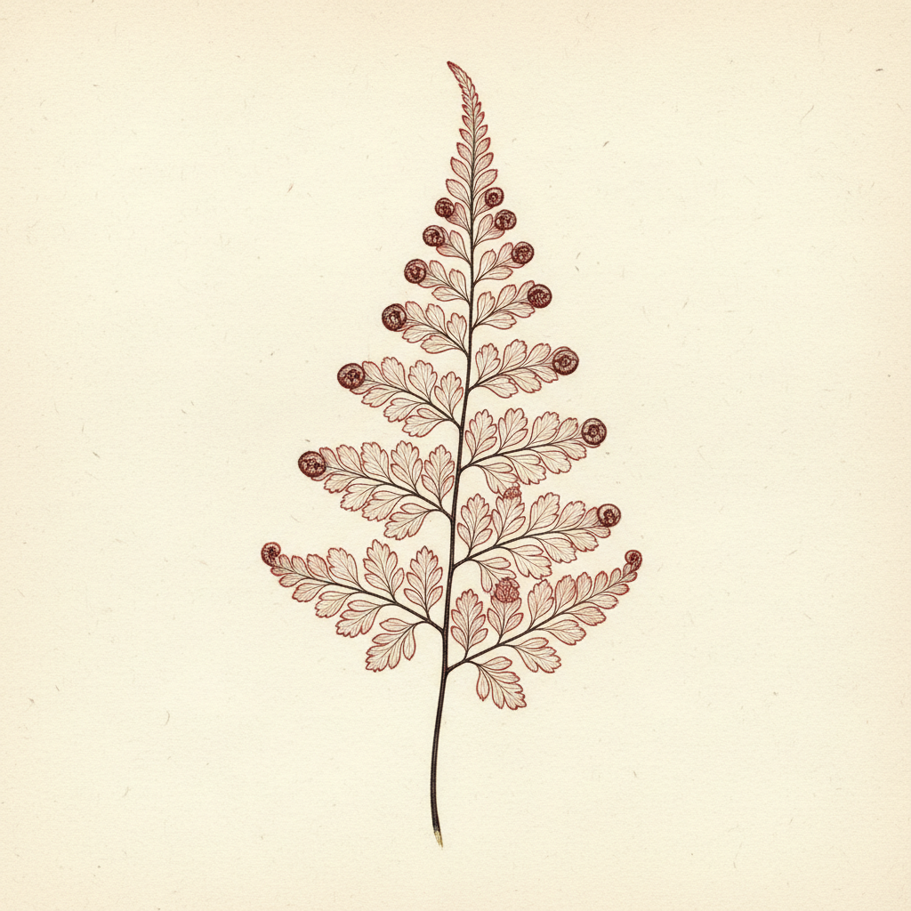
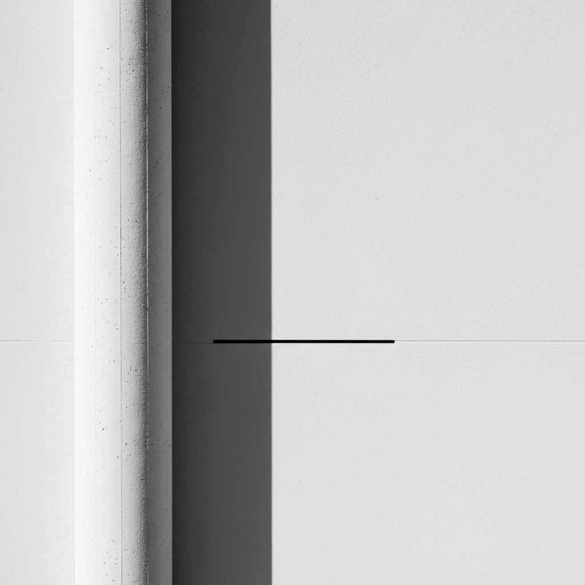
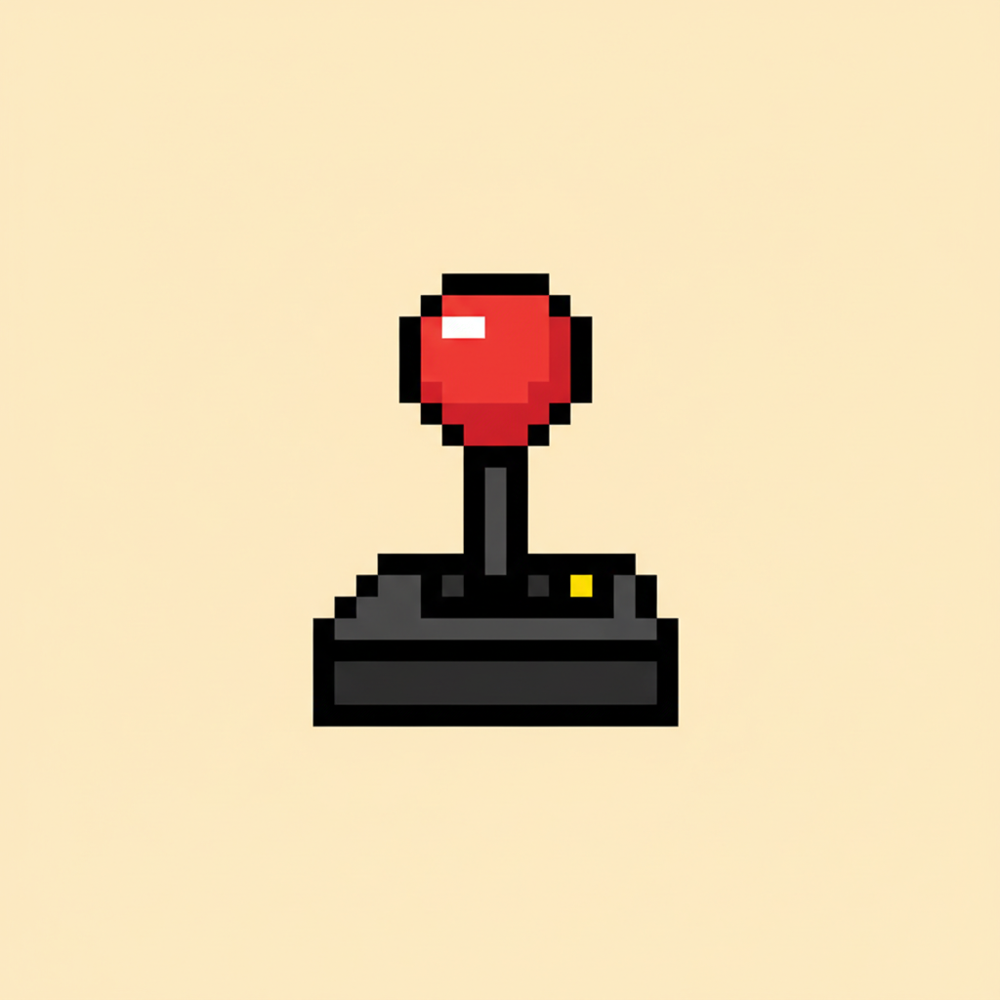

Open in Chrome. Run Cmd+P → Save as PDF to validate all print paths.
System fonts, blue accent, 20px-radius cards — business-ready, no external dependencies.
Light on text, heavy on beauty. Cormorant Garamond at 300 weight, warm cream palette, generous negative space.
The editorial ambition of Monograph has always been to treat the book as an object of beauty first and a vessel of information second. The warm cream of aged ivory paper, the restraint of a single-weight display face at a third of normal weight — these are not accidents but decisions shaped by decades of publishing culture.
What distinguishes this mood from the baseline is the quality of negative space. Where the crisp system defaults to filling available width with content, the Monograph approach deliberately leaves air — room for the eye to rest before continuing.
Typography is the silent architecture beneath every beautiful page.
Dense, authoritative, richly visual. Playfair Display weight 900, crimson accent, two-column body text with full-span callouts.

The Folio approach to reference publishing established a template that has defined encyclopedic print culture for four decades. The combination of bold Playfair Display headers at weight 900, set in tight negative tracking, against the warmer grain of Baskerville body text creates a legible contrast that sustains readership across hundreds of pages.
Two-column layouts serve density without sacrificing measure. At 65 characters per column — the physiological optimum for sustained reading — this grid allows approximately 30% more content per page than single-column equivalents.
The two-column grid allows 30% more content per page while maintaining an optimal 65-character measure per column.
The column rule — a single pixel at border-light weight — acts as a visual guide rather than a divider, allowing the eye to track vertically without confusion. Combined with the orphans: 3; widows: 3 rule, text rivers and lone lines are eliminated from the grid.
Hyphenation is applied automatically via hyphens: auto, maintaining justified text without the aggressive spacing gaps that plague non-hyphenated justified copy at narrow column widths.
Swiss-influenced, rigorous, disciplined. DM Serif Display italic at maximum scale, near-black accent, heavy ruled section dividers.

The Modernist tradition is one of restraint elevated to principle. Where other publishers treat white space as leftover, Modernist treats it as intention — the deliberate silence between notes that allows the visual music to resonate. The DM Serif Display italic face, at its maximum optical scale of 80pt, becomes a visual event rather than merely a heading.
The near-black monochrome palette removes the noise of chromatic variation, focusing attention entirely on compositional relationships: weight, axis, measure, and rule. The border-top: 3px solid #1A1A1A section divider performs the same function as a drawn rule in traditional typography.
White space is not emptiness — it is the architecture of attention.
An 80s arcade journal aesthetic. Press Start 2P for headlines, VT323 for body. Cream manual-paper background, arcade-yellow accent with ghost-color set, hard pixel drop-shadows, ASCII border vocabulary. Every corner is sharp on purpose.

STAGE 01 ▶ The Pac-Man cabinet manual was an artifact of constraint. The display font had to render in 8×8 pixel cells. The body type had to read on cheap newsprint stock. The colors had to print on a four-ink press. Every limitation became a vocabulary.
Today's browsers have none of those constraints — but the look is worth recreating because it carries something the rest of the design world has forgotten: a delight in the seams. The pixel grid is the grid. The hard drop-shadow is the drop-shadow. The cream paper is the paper.
Use this mood for retro/nostalgia content, gaming docs, internal "playbooks," product launch announcements with a wink, or anything that wants to feel like a found object from 1983.
.scanlines opt-in class for a CRT overlay on screen. It's killed automatically in @media print so PDFs stay clean.
◀ READY PLAYER ONE — PRESS START ▶
The arcade mood is opt-in. Apply class="mood-arcade" on the body or a wrapper, load Press Start 2P + VT323 from Google Fonts, and the rest of base-styles.css falls in line. Pair with image strategy: placeholders for inline pixel-art SVGs like the ghosts above, or generated if you want Gemini to render scanned-cabinet-art heroes.